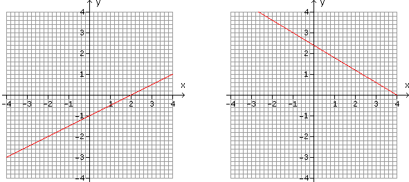
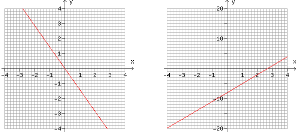
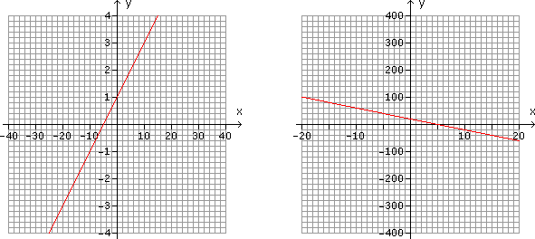

Funktionskurven - Aufgaben 2
Lies die Funktionsgleichungen für folgende Geraden ab:
1.
2.

3.
4.

5.
6.

Ergebnisse:
1.
y = 0,5x
–
1
2.
y = –0,6x
+
2,4
3.
y = –1,4x
4.
y = 3x
–
8
5.
y = 0,2x
+
1
6.
y = –4x
+
20